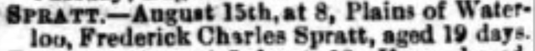

Frederick Charles Spratt 1917 - 1917
[ Home ] | [ Calendar ] | [ Surnames Index ] | [ Family History ]The son of Herbert Spratt (a hotel manager) and Ethel Challis (a hotel manageress), Frederick Spratt, the second cousin once-removed on the father's side of <a href="I1.html">Nigel Horne</a>, was born in Thanet, Kent, England in Jul 1917<span class="citation">1</span>.<p>He died on Aug 15, 1917 at 8 Plains of Waterloo, Ramsgate, Kent, England<span class="citation">2</span>.
Parents
- Herbert Jesse was born on Aug 16, 1894
- Ethel Lucy was born on May 21, 1891
Citations
- England & Wales births 1837-2006 - Findmypast
- England & Wales deaths 1837-2007 - Findmypast
Media
Thanet Advertiser 18 Aug 1917

England & Wales births 1837-2006 - BMD/B/1917/3/AZ/001124/011
England & Wales deaths 1837-2007 - BMD/D/1917/3/AZ/000746/115
Family Tree

Generated by Ged2Site. Last updated on Jul 20, 2025